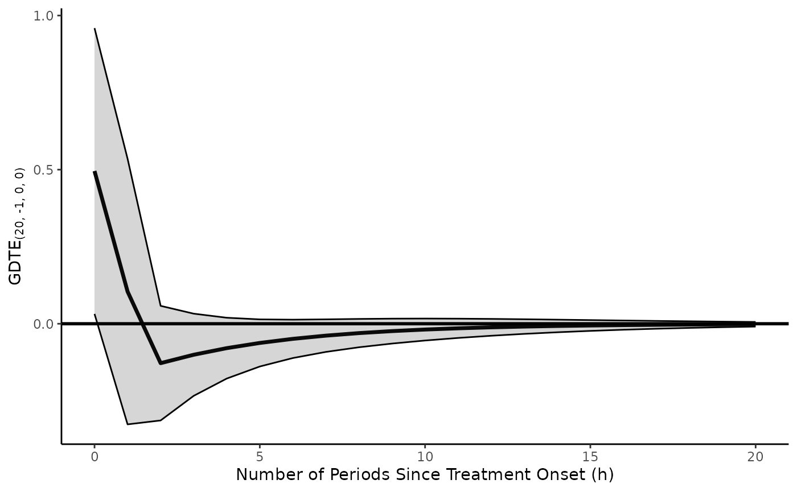
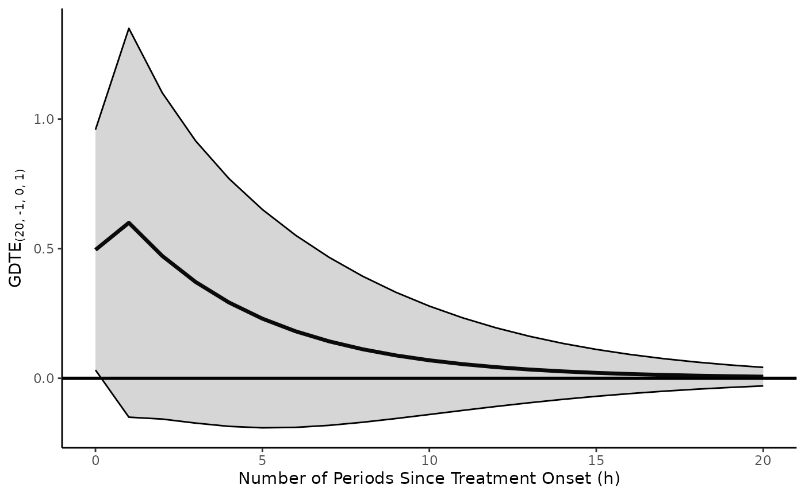

An Introduction to tseffects: Robust Dynamic (Causal) Inferences from Single-Equation Time Series Models (with Interactions)
Soren Jordan, Garrett N. Vande Kamp, and Reshi Rajan
2025-07-31
Source:vignettes/tseffects-vignette.Rmd
tseffects-vignette.RmdAutoregressive distributed lag (A[R]DL) models (and their reparameterized equivalent, the Generalized Error-Correction Model [GECM]) are the workhorse models in uncovering dynamic inferences. Since the introduction of the general-to-specific modeling strategy of Hendry (1995), users have become accustomed to specifying a single-equation model with lags of the dependent variable included alongside the independent variables (in differences or levels, as appropriate) to capture dynamic inferences. Through all of the follolwing, we assume users are familiar with such models and their best practices, including testing for stationarity on both sides of the equation (Philips 2022), equation balance (Pickup and Kellstedt 2023), the absence of serial autocorrelation in the residuals, or the testing for moving averages (Vande Kamp and Jordan 2025).
ADL models are simple to estimate; this is what makes them attractive. Once these models are estimated, what is less clear is how to uncover a rich set of dynamic inferences from these models. This complication arises in two key areas. First: despite robust work on possible quantities of interest that can be derived from dynamic models (see De Boef and Keele (2008)), the actual calculation of these quantities (and corresponding measures of uncertainty) remains a considerable difficulty for practitioners. Formulae are often complex and model-dependent (i.e. on the underlying lag structure of the model). While other, simulation-based methods exist to interpret A[R]DL models (as in Jordan and Philips Jordan and Philips (2018a)), these methods are not well equipped to test hypotheses of interest.
Second: these inferences are rarely causal. While some have developed frameworks for causal inference using alternative dynamic models (Blackwell 2013), little work recognizes the potential of the A[R]DL model itself to provide causal inferences. Vande Kamp, Jordan, and Rajan (2025) begin to fill this gap by specifying the conditions under which the ADL model provides causal inferences, but these inferences too are difficult to calculate.
tseffects solves both problems. To show how, we first
re-introduce the ADL and GECM models and define typical effects
calcualted from these models. We then apply those effects to each of the
unique problems outlined above.
The ADL/GECM model
To help ensure consistency in notation, we define the ADL(,) model as follows
Similarly, we define its GECM equivalent as
Notice in particular the form of the GECM with a single first lag of
both the dependent and independent variable in levels. (The GECM
calculations provided by ts.ci.gecm.plot assume this
correctly specified GECM and use the variable translations between the
GECM and ADL to define the coefficient in ADL terms.) We will use these
models to define and recover both causal effects and traditional
time-series effects from the underlying model.
Causal inferences with ts.effects
We define the causal estimand of the Pulse Treatment Effect (PTE), commonly referred to as an impulse response function (or perhaps a short-run effect) in the time series literature.
We additionally define the causal estimand of the Step Treatment Effect (STE), commonly referred to as a cumulative impulse response function in the time series literature.
These quantities are often estimated from an ADL including a dependent variable in levels or differences, an independent variable in levels or differences, or a mix of both. Yet scholars might want to make causal inferences regarding the dependent variable in levels regardless of its order of differencing in the ADL model. Or, scholars might want to uncover the effects of a treatment applied to an independent variable in levels, even if that independent variable is entered into the ADL in differences. Regular ADL formulae cannot deliver on this expectation. To resolve this deficiency, Vande Kamp, Jordan, and Rajan (2025) introduce the General Dynamic Treatment Effect
with the following elements:
- : the number of times the independent variable is differenced before determining the effect of the treatment on the dependent variable
- : the number of times the independent variable is differenced before a treatment is applied to it
- : the number of time periods since a treatment was applied
deserves special explanation. (Vande Kamp, Jordan, and Rajan 2025) demonstrate how the binomial function can be used to represent traditional and beyond-traditional treatment histories typically examined in time series
- : Treatment sequence ; Linear Trend Coefficient of
- : Treatment sequence ; Permanent One-Unit Increase (Step)
- : Treatment sequence One-Time, One-Unit Increase (Pulse)
The leverage of the GDTE is that it “translates” these popular treatment histories to recover inferences in the desired form of the independent and dependent variables, regardless of their level of differencing, given the specified treatment history. All scholars need to do is estimate the ADL model and choose a treatment.
Two subfunctions: pte.calculator and
GDTE.calculator
While its unlikely that users will want to interact with these “under
the hood” functions, they might be useful either for teaching or for
developing a better understanding of the GDTE. Despite their names,
neither function actually does any “calculation”; rather, they return an
mpoly class of the formula that would be evaluated.
The first is pte.calculator. Like its name implies, this
calculates the traditional PTE for
up to $h = $ some limit. It returns a list of formulae,
each one the PTE for the relevant period. (Time series scholars might
refer to these as the period-specific effects.) It constructs these
formulae given a named vector of the relevant
variables (passed to x.vrbl) and their corresponding lag
orders, as well as the same for
(passed to y.vrbl). For instance, if you estimate an
ADL(1,2), where the
variables are mood, l1.mood, and
l2.mood (lags need not be consecutive, though in a
well-specified ADL they likely are) and the dependent variable is
policy (with its first lag l1.policy),
pte.calculator would look like
library(tseffects)
ADL1.2.ptes <- pte.calculator(x.vrbl = c("mood" = 0, "l1_mood" = 1, "l2_mood" = 2),
y.vrbl = c("l1_policy" = 1),
limit = 5)This list is six elements long: including the PTE for each period
from 0 to 5. These PTEs form the basis of the GDTE, given the order of
differencing of
and
and the specified treatment history
.
To create the formulae for the GDTE, GDTE.calculator
requires five arguments, most of which are defined above:
d.x and d.y (defined with respect to the
GDTE), n (the treatment history applied),
limit, and pte. The novel argument,
pte, is the list of PTEs for each period in which a GDTE is
desired.
Assume the same ADL(1,2) from above. To recover the formulae for a
GDTE of a pulse treatment, assuming that both mood and
policy are in levels (such that both d.x and
d.y are 0), we would run
GDTE.calculator(d.x = 0, d.y = 0, n = -1, limit = 5, pte = ADL1.2.ptes)
#> $formulae
#> $formulae[[1]]
#> [1] "mood "
#>
#> $formulae[[2]]
#> [1] "l1_mood + l1_policy * mood "
#>
#> $formulae[[3]]
#> [1] "l2_mood + l1_policy * l1_mood + l1_policy**2 * mood "
#>
#> $formulae[[4]]
#> [1] "l1_policy * l2_mood + l1_policy**2 * l1_mood + l1_policy**3 * mood "
#>
#> $formulae[[5]]
#> [1] "l1_policy**2 * l2_mood + l1_policy**3 * l1_mood + l1_policy**4 * mood "
#>
#> $formulae[[6]]
#> [1] "l1_policy**3 * l2_mood + l1_policy**4 * l1_mood + l1_policy**5 * mood "
#>
#>
#> $binomials
#> $binomials[[1]]
#> [1] 1
#>
#> $binomials[[2]]
#> [1] 1 0
#>
#> $binomials[[3]]
#> [1] 1 0 0
#>
#> $binomials[[4]]
#> [1] 1 0 0 0
#>
#> $binomials[[5]]
#> [1] 1 0 0 0 0
#>
#> $binomials[[6]]
#> [1] 1 0 0 0 0 0(Since GDTE.calculator is “under the hood,”
n can only be specified as an integer. Later, in a more
user-friendly function, we will see that treatment histories can also be
specified using characters.)
Recall that we might want to generalize our inferences beyond simple
ADLs with both variables in levels. For exposition, assume that
mood was integrated, so, to balance the ADL, it needed to
be entered in differences. The user does this and enters
variables as d.mood, l1.d.mood, and
l2.d.mood. pte.calculator would look like
ADL1.2.d.ptes <- pte.calculator(x.vrbl = c("d_mood" = 0, "l1_d_mood" = 1, "l2_d_mood" = 2),
y.vrbl = c("l1_policy" = 1),
limit = 5)tseffects allows the user to recover inferences of a
treatment history applied to
in levels, rather than its observed form of differences. All we need to
do is specify the d.x order.
GDTE.calculator(d.x = 1, d.y = 0, n = -1, limit = 5, pte = ADL1.2.d.ptes)
#> $formulae
#> $formulae[[1]]
#> [1] "d_mood "
#>
#> $formulae[[2]]
#> [1] "l1_d_mood + l1_policy * d_mood - d_mood "
#>
#> $formulae[[3]]
#> [1] "l2_d_mood + l1_policy * l1_d_mood + l1_policy**2 * d_mood - l1_d_mood - l1_policy * d_mood "
#>
#> $formulae[[4]]
#> [1] "l1_policy * l2_d_mood + l1_policy**2 * l1_d_mood + l1_policy**3 * d_mood - l2_d_mood - l1_policy * l1_d_mood - l1_policy**2 * d_mood "
#>
#> $formulae[[5]]
#> [1] "l1_policy**2 * l2_d_mood + l1_policy**3 * l1_d_mood + l1_policy**4 * d_mood - l1_policy * l2_d_mood - l1_policy**2 * l1_d_mood - l1_policy**3 * d_mood "
#>
#> $formulae[[6]]
#> [1] "l1_policy**3 * l2_d_mood + l1_policy**4 * l1_d_mood + l1_policy**5 * d_mood - l1_policy**2 * l2_d_mood - l1_policy**3 * l1_d_mood - l1_policy**4 * d_mood "
#>
#>
#> $binomials
#> $binomials[[1]]
#> [1] 1
#>
#> $binomials[[2]]
#> [1] 1 -1
#>
#> $binomials[[3]]
#> [1] 1 -1 0
#>
#> $binomials[[4]]
#> [1] 1 -1 0 0
#>
#> $binomials[[5]]
#> [1] 1 -1 0 0 0
#>
#> $binomials[[6]]
#> [1] 1 -1 0 0 0 0As (Vande Kamp, Jordan, and Rajan 2025) suggest, scholars should be very thoughtful about the treatment history applied. These treatments are applied to the underlying independent variable in levels. Since is integrated in this example, it might be more reasonable to imagine that the underlying levels variable is actually trending. To revise this expectation and apply a new treatment history, we would run
GDTE.calculator(d.x = 1, d.y = 0, n = 1, limit = 5, pte = ADL1.2.d.ptes)
#> $formulae
#> $formulae[[1]]
#> [1] "d_mood "
#>
#> $formulae[[2]]
#> [1] "l1_d_mood + l1_policy * d_mood + d_mood "
#>
#> $formulae[[3]]
#> [1] "l2_d_mood + l1_policy * l1_d_mood + l1_policy**2 * d_mood + l1_d_mood + l1_policy * d_mood + d_mood "
#>
#> $formulae[[4]]
#> [1] "l1_policy * l2_d_mood + l1_policy**2 * l1_d_mood + l1_policy**3 * d_mood + l2_d_mood + l1_policy * l1_d_mood + l1_policy**2 * d_mood + l1_d_mood + l1_policy * d_mood + d_mood "
#>
#> $formulae[[5]]
#> [1] "l1_policy**2 * l2_d_mood + l1_policy**3 * l1_d_mood + l1_policy**4 * d_mood + l1_policy * l2_d_mood + l1_policy**2 * l1_d_mood + l1_policy**3 * d_mood + l2_d_mood + l1_policy * l1_d_mood + l1_policy**2 * d_mood + l1_d_mood + l1_policy * d_mood + d_mood "
#>
#> $formulae[[6]]
#> [1] "l1_policy**3 * l2_d_mood + l1_policy**4 * l1_d_mood + l1_policy**5 * d_mood + l1_policy**2 * l2_d_mood + l1_policy**3 * l1_d_mood + l1_policy**4 * d_mood + l1_policy * l2_d_mood + l1_policy**2 * l1_d_mood + l1_policy**3 * d_mood + l2_d_mood + l1_policy * l1_d_mood + l1_policy**2 * d_mood + l1_d_mood + l1_policy * d_mood + d_mood "
#>
#>
#> $binomials
#> $binomials[[1]]
#> [1] 1
#>
#> $binomials[[2]]
#> [1] 1 1
#>
#> $binomials[[3]]
#> [1] 1 1 1
#>
#> $binomials[[4]]
#> [1] 1 1 1 1
#>
#> $binomials[[5]]
#> [1] 1 1 1 1 1
#>
#> $binomials[[6]]
#> [1] 1 1 1 1 1 1(Notice that the PTEs do not change.) Recall that these are “under the hood”: we expect instead that most users will interact with the full calculation and plotting functions, discussed below.
User-friendly causal effects: ts.ci.adl.plot and
ts.ci.gecm.plot
Again, we don’t expect most users will not interact with these
calculators. Instead, they will estimate an ADL model via
lm and expect causal effects. To achieve this directly, we
introduce ts.ci.adl.plot. We gloss over arguments that
we’ve already seen in pte.calculator and
GDTE.calculator:
-
x.vrbl: a named vector of the variable and its lag orders -
y.vrbl: a named vector of the variable and its lag orders -
d.x: the order of differencing of the independent variable before a treatment is applied -
d.y: the order of differencing of the dependent variable before causal effects are recovered -
h.limit: the number of periods for which to calculate the treatment effects (the default is 20)
Now, since effects will be calcualted, users must also provide a
model: the lm object containing the
(well-specified, etc. ADL model) that has the estimates. Users must also
specify a treatment history through te.type. Users can
continue to specify an integer that represents n or can use
the phrases pte or pulse (for
)
and ste or step (for
).
To generalize the challenge of variables entered in differences, users
can specify inferences.y and inferences.x. If
both
and
are entered into the ADL in levels (so that d.x and
d.y are 0), inferences.y and
inferences.x default to levels. If, however,
either
or
(or both) are entered in differences, users can recover causal effects
from a treatment history applied to
in levels, or to a dependent variable realized in levels. However,
they don’t have to. The treatment can still be applied to
in differences, or the causal effects can be realized on
in differences: just change inferences.x to
differences (for the former) or inferences.y
to differences (for the latter).
A few options allows users to tailor levels and types of uncertainty
desired. The first is the type of standard errors calculated from the
model: users can specify any type of standard error accepted by
vcovHC in the sandwich package: this is done
by se.type = (where const is the default).
Users can also specify a level of uncertainty to the delta method other
than 0.95; this is done through dM.level.
Three final arguments control the output returned to the user.
-
return.plot: we assume most users would like a visualization of these results and nothing else (default isTRUE) -
return.data: if the user wants the raw data (to design their ownggplot, for instance), this argument should beTRUE(default isFALSE) -
return.formulae: the formulae can be very complex, but perhaps users want to see the particular formula for the effect in some particular period . Ifreturn.formulae = TRUE, these are returned as a list, along with the binomial series that represents the treatment history (default isFALSE)
We’ll use the toy time series data included with the package to illustrate the function. These data are purely expository, as is the model. We do not advocate for this model.
data(toy.ts.interaction.data)
# Fit an ADL(1, 1)
model.adl <- lm(y ~ l_1_y + x + l_1_x, data = toy.ts.interaction.data)
test.pulse <- ts.ci.adl.plot(model = model.adl,
x.vrbl = c("x" = 0, "l_1_x" = 1),
y.vrbl = c("l_1_y" = 1),
d.x = 0,
d.y = 0,
te.type = "pulse",
inferences.y = "levels",
inferences.x = "levels",
h.limit = 20,
return.plot = TRUE,
return.formulae = TRUE)
This recovers the pulse treatment effect. We can also observe the
formulae and associated binomials in test.pulse$formulae
and test.pulse$binomials. test.pulse$plot
contains the plot: the effect of applying a pulse treatment to
.
If we wanted the STE, we would change te.type.
test.pulse2 <- ts.ci.adl.plot(model = model.adl,
x.vrbl = c("x" = 0, "l_1_x" = 1),
y.vrbl = c("l_1_y" = 1),
d.x = 0,
d.y = 0,
te.type = "ste",
inferences.y = "levels",
inferences.x = "levels",
h.limit = 20,
return.plot = TRUE,
return.formulae = TRUE)
Equivalently, we could specify te.type =
step or 0 (since this is the value of
that represents a step treatment history).
Imagine that the variable was actually integrated, so, for balance, it was entered into the model in differences.
data(toy.ts.interaction.data)
# Fit an ADL(1, 1)
model.adl.diffs <- lm(y ~ l_1_y + d_x + l_1_d_x, data = toy.ts.interaction.data)To observe the causal effects of a pulse treatment history applied to in levels, we would run
ts.ci.adl.plot(model = model.adl.diffs,
x.vrbl = c("d_x" = 0, "l_1_d_x" = 1),
y.vrbl = c("l_1_y" = 1),
d.x = 1,
d.y = 0,
te.type = "pte",
inferences.y = "levels",
inferences.x = "levels",
h.limit = 20,
return.plot = TRUE)
(Notice the change in d.x and the x.vrbl).
Suppose, though, that we wanted to apply this pulse treatment to
in differences. We just change the form of
inferences.x, leaving all other arguments the same.
ts.ci.adl.plot(model = model.adl.diffs,
x.vrbl = c("d_x" = 0, "l_1_d_x" = 1),
y.vrbl = c("l_1_y" = 1),
d.x = 1,
d.y = 0,
te.type = "pte",
inferences.y = "levels",
inferences.x = "differences",
h.limit = 20,
return.plot = TRUE)
The same changes could be made to inferences.y (if it
were modeled in differences). Generally speaking: d.x
should be entered as the form of the independent variable, even if the
user desires treatment effects recovered in the differenced form (this
should be handled by inferences.x). The same is true of
d.y.
ts.ci.gecm.plot is extremely similar. Imagine the
following specified GECM model
# Fit a GECM(1, 1)
model.gecm <- lm(d_y ~ l_1_y + l_1_d_y + l_1_x + d_x + l_1_d_x, data = toy.ts.interaction.data)Since both the
and
variables appear in levels and differences, we need to differentiate
them. ts.ci.gecm.plot does this by separating them into two
forms
-
x.vrbl: a named vector of the x variables (of the lower level of differencing, usually in levels d = 0) and corresponding lag orders in the GECM model -
y.vrbl: a named vector of the (lagged) y variables (of the lower level of differencing, usually in levels d = 0) and corresponding lag orders in the GECM model -
x.vrbl.d.x: the order of differencing of the x variable (of the lower level of differencing, usually in levels d = 0) in the GECM model -
y.vrbl.d.y: the order of differencing of the y variable (of the lower level of differencing, usually in levels d = 0) in the GECM model -
x.d.vrbl: a named vector of the x variables (of the higher level of differencing, usually first differences d = 1) and corresponding lag orders in the GECM model -
y.d.vrbl: a named vector of the y variables (of the higher level of differencing, usually first differences d = 1) and corresponding lag orders in the GECM model -
x.d.vrbl.d.x: the order of differencing of the x variable (of the higher level of differencing, usually first differences d = 1) in the GECM model -
y.d.vrbl.d.y: the order of differencing of the y variable (of the higher level of differencing, usually first differences d = 1) in the GECM model
The orders of differencing of y.vrbl and
y.d.vrbl (as well as x.vrbl and
x.d.vrbl) must be separated by only one order. From here,
all of the other arguments are the same. (Unlike in
ts.ci.gecm.plot, inferences.x and
inferences.y must be in levels, given the dual nature of
the variables in the model.) For model.gecm, the syntax
would be
gecm.pulse <- ts.ci.gecm.plot(model = model.gecm,
x.vrbl = c("l_1_x" = 1),
y.vrbl = c("l_1_y" = 1),
x.vrbl.d.x = 0,
y.vrbl.d.y = 0,
x.d.vrbl = c("d_x" = 0, "l_1_d_x" = 1),
y.d.vrbl = c("l_1_d_y" = 1),
x.d.vrbl.d.x = 1,
y.d.vrbl.d.y = 1,
te.type = "pulse",
inferences.y = "levels",
inferences.x = "levels",
h.limit = 20,
return.plot = TRUE,
return.formulae = TRUE)Examining the formulae show that the conversion from GECM
coefficients to ADL coefficients is automatic. As before, if we wanted a
different treatment history, we would just adjust te.type
to apply a different treatment history to
in levels.
Concluding thoughts
A word of caution: tseffects is very naive to your
model. This is true in three ways. First, it relies on the user to
specify the lag structure correctly in both the underlying
lm model as well as the corresponding plot you are
producing. Including a term in the model, but not passing it to the
plotting function (i.e. to ts.ci.adl.plot through
x.vrbl) will cause the calculation of the effects to be
inaccurate. So, be sure to always include all forms of both
and
constructing effects estimates.
Second, and to reiterate, it makes no check that your model is well specified. The best starting place for a calculation of effects is always a well-specified model; users should complete this before obtaining inferences. See the citations at the beginning of the vignette for places to start.
Third, if using the causal inference functions, it does not pass
judgement on the treatment history you are applying. Stationary
(d.x = 0) variables cannot trend by definition, but
specifying te.type = 1 in the function would apply a linear
trend treatment history anyway. This is not a good idea and is
inconsistent with the underlying independent variable. However,
treatments are counterfactuals, and we are loathe to limit the ability
of a user to specify a counterfactual, consistent or not. We leave it in
the user’s hands to determine if their treatment is sensible or not.
Despite these words of caution, tseffects hopefully
simplifies the job of the time series analyst in obtaining a variety of
effects.